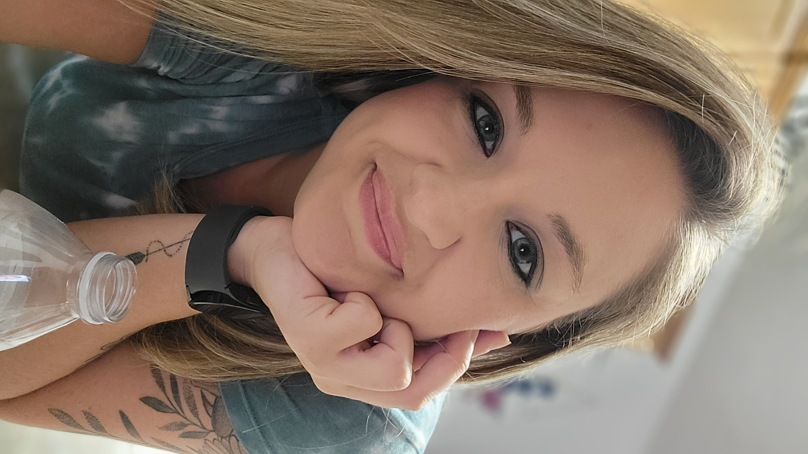
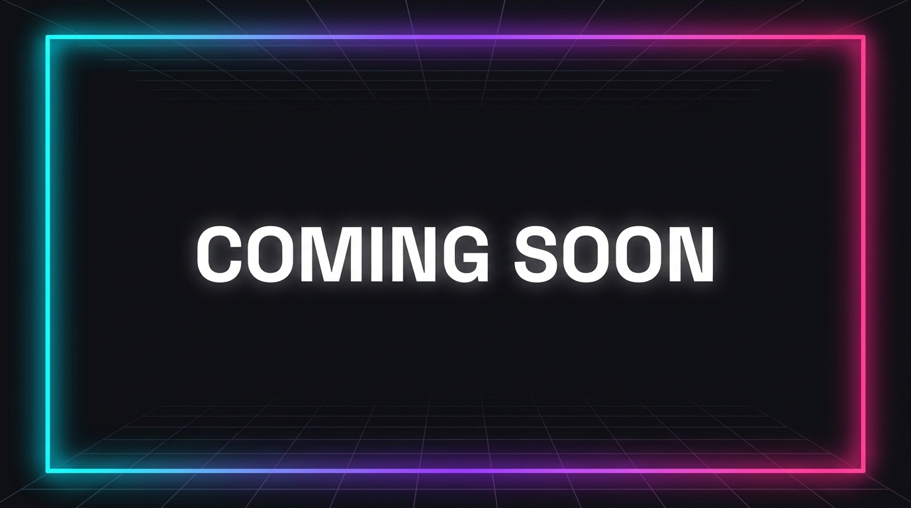

The Oasis Bar & Grill
Custom brand identity and logo design created for a local restaurant and bar, balancing bold typography with clean hospitality appeal.
View Full Logo >
Hi, I'm Lori! I work full-time as a high-risk maternal fetal medicine sonographer and am wrapping up my senior year at Texas Tech University, majoring in Applied Personal Finance with a minor in Computing Applications.
With over 13 years in diagnostic healthcare and past experience running my own small business, I've learned a lot about leadership, problem-solving, and paying close attention to the details. Pairing my finance major with computing classes has been a fun way to connect practical organization with hands-on tech skills.
Outside of work and school, I love graphic design, photography, and building websites from scratch. Whether I'm creating a logo for a local business, taking family and sports photos, or coding a new webpage, I enjoy projects that let me be both organized and creative.
Custom brand identity and logo design created for a local restaurant and bar, balancing bold typography with clean hospitality appeal.
View Full Logo >A visual gallery showcasing newborn, family, sports, and landscape photography, capturing everything from delicate studio portraits to dynamic outdoor action.
View Full Photo >
Space reserved for an upcoming web development or design project currently in the works.
In Progress >Space reserved for an upcoming web development or design project currently in the works.
In Progress >